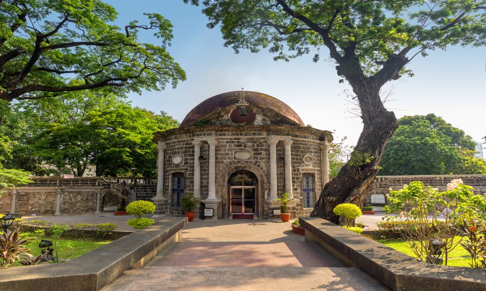

Manila Paco Park is another popular tourist spot located in Manila, Philippines. It is a historic park that served as a municipal cemetery during the Spanish colonial era and was later converted into a park in 1966. The park is known for its peaceful and serene atmosphere, surrounded by walls and adorned with lush trees and greenery. It also features a small chapel that was built during the Spanish colonial era and is considered one of the oldest structures in Manila. Visitors to Manila Paco Park can enjoy a relaxing stroll around the park, taking in the beautiful surroundings and enjoying the fresh air. The park is also a popular spot for picnics, family gatherings, and other outdoor activities. In addition, the park serves as a venue for cultural events and performances, such as music festivals and concerts. It is also a popular location for prenuptial and wedding photoshoots due to its romantic and picturesque ambiance. Overall, Manila Paco Park is an excellent tourist spot in Manila that provides visitors with a peaceful and serene environment to relax and enjoy the outdoors. Its rich history and cultural significance make it a must-see destination for anyone interested in Philippine history and culture.
Manila Paco Park is an important tourist spot for several reasons:
Historical Significance: Manila Paco Park is a historic landmark that served as a municipal cemetery during the Spanish colonial era. It is considered one of the oldest structures in Manila and is a testament to the city's rich cultural heritage. Visiting the park is an opportunity to learn about Manila's past and its cultural significance.
Relaxing Atmosphere: The park's lush trees and greenery, along with its peaceful ambiance, make it a perfect place to relax and unwind. Visitors can take a stroll around the park, enjoy a picnic, or simply sit and enjoy the beautiful surroundings. It is a great place to escape the hustle and bustle of the city.
Cultural Events: Manila Paco Park is also a popular venue for cultural events and performances. Visitors can experience traditional Philippine music and dance performances or attend cultural festivals and events.
Romantic Setting: The park's serene ambiance and beautiful surroundings also make it a popular location for prenuptial and wedding photoshoots. Its romantic setting is perfect for couples looking for a picturesque and intimate location.
Overall, Manila Paco Park is an important tourist spot that offers visitors a chance to relax and enjoy a peaceful environment while learning about Manila's rich history and culture. Its cultural events and romantic setting make it a popular destination for locals and tourists alike.